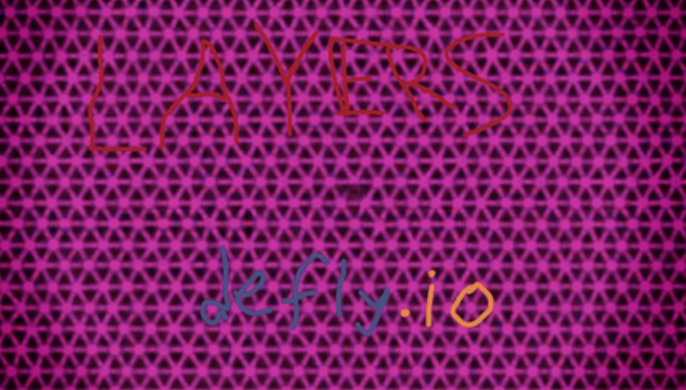
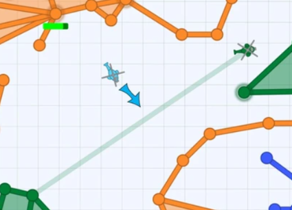

In order to be effective, you have to level up as quickly as possible. The maximum level is 32. However, you cannot level up in Defuse.
Destroy enemy towers by shooting them. You can also destroy the towers inside your territory as you can kill them with a single shot, even if it looks like they have a shield and maximized tower health.
Conquer territory OUTSIDE of your base.
Kill other players by shooting them. The higher the enemy level is, the more XP you get when killing them.
When you get to level 20 (all modes except defuse), you get to choose a superpower, which you can launch for 10 seconds and then wait like 10 seconds to recharge it. Dual fire increases damage to towers. Speed boost increases speed by a lot. Clone gives you a clone which has many uses (not for beginners). Shield provides a temporary shield when you feel like it. Flashbang blinds the opposing players for like 2 seconds. Teleport is used for escapes, tp digs, tp clotheslines, and tp kills.
Builders create and repair the forts to help their teammates. They also reinforce area by making it layering. Here are the important points that you should use for the builder: Build distance, capable of building your walls close to you. Tower health, which makes your towers take multiple hits. Tower shield, which guards your walls from getting hit for a couple of seconds.
Shooters shoot the enemies with their bullets to kill players. They are generally for the aggressive type of players. Here are the main points that are for the shooter: Bullet speed, which makes your bullets further. Bullet range, which gives your bullets more range for them. Reload speed, which makes your bullets a whole lot faster.
A hybrid is a shooter and builder merged together. The main hybrid points you would need are: Player speed, which makes your copter go faster. Reload speed, which makes your copter shoot faster. Tower shield, which guards your towers for bullets to bounce off of them. Tower health, which helps your towers take less damage. Explore more about hybrids!
A clothesline in defly is when an opposing player is about to go somewhere and you build a wall just before they cross, killing them when they crash into your wall. It is useful for getting kills, especially in fast paced defuse when the opposing player is focused on dodging but doesn't realize your plan.

As you can see, a large explosion happens, destroying lots of territory and layering. This can lead to chain kills which nobody likes.
This gif is also a classic example of a teleport clothesline, as you can see at the bottom, a player teleports, trapping the red builder and making the red towers have 0 health. Health is the green marks, and this shows why it is so important.
In defuse, you don't have levels, but you get money for stuff you do.